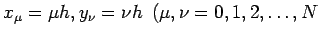
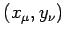

Inhalt Index DeskTop Bronstein

 Numerische Mathematik Genäherte Integration von partiellen Differentialgleichungen Methode der finiten Elemente (FEM)
Numerische Mathematik Genäherte Integration von partiellen Differentialgleichungen Methode der finiten Elemente (FEM)


Das Integrationsgebiet G wird in einfache Teilgebiete zerlegt. In der Regel nimmt man eine Triangulierung vor, bei der G durch Dreiecke so überdeckt wird, daß einander angrenzende Dreiecke eine ganze Seite oder nur einen Eckpunkt gemeinsam haben. Ein krummlinig begrenztes Gebiet kann durch Dreiecke recht gut approximiert werden (s. Abbildung).
Hinweis: Um numerische Schwierigkeiten zu vermeiden, sollte die Triangulierung keine allzu stumpfen Dreiecke enthalten.
| Beispiel |
|
Eine Triangulierung des Einheitsquadrates könnte in der in der folgenden Abbildung angegebenen Weise erfolgen.
Dabei geht man von Gitterpunkten mit den Koordinaten ; h =1/N) aus. Man erhält (N-1)2 innere Punkte. Im Hinblick auf die Wahl von Ansatzfunktionen ist es zweckmäßig, jeweils 6 Dreiecke, die im Punkte  zusammenstoßen, zu dem Flächenstück |